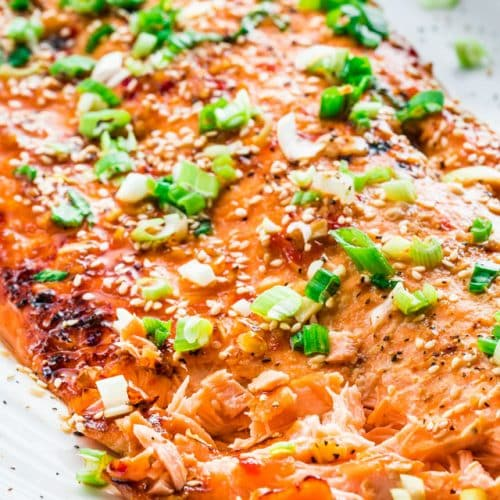

Description
This is a fantastic salmon dish that is both easy to make and delicious.
While taking notes from both sweet and tangy ingrediants that come together as the asian style sauce for this foil baked salmon recipe, you can have a delicious easy-to-make dinner in under 30 minutes.
Ingrediants
- 1 lb Fresh Salmon
- Coking Foil
- 1/8 Cup of Honey
- 2 tbsp of Soy Sauce
- 1 tbsp of Cooking Oil
- 1 tbsp of Sriracha (optional)
- Freshly Ground Black Pepper to taste
- 1 tbsp of Rice Vinegar
Steps
- Pre-heat oven to 350 degrees Farrenheit.
- Mix all sauce ingrediants together in a bowl; adjust to taste.
- Line oven safe pan with foil.
- Place salmon onto the foil, with the edges of foil curved upward around the salmon.
- Drizzle sauce over the salmon.
- With salmon fully covered with sauce, wrap edges of the foil around the salmon so that the salmon is fully covered with no sauce escaping.
- Place oven safe pan with the salmon onto the middle rack of the oven for 15-20 minutes.
- After cooking at 350 degrees Farrenheit, unwrap the ends of the foil from the salmon and place back onto the oven middle rack on broil setting for 3-5 minutes.
- Unwrap delicious asian style foil baked salmon and enjoy!